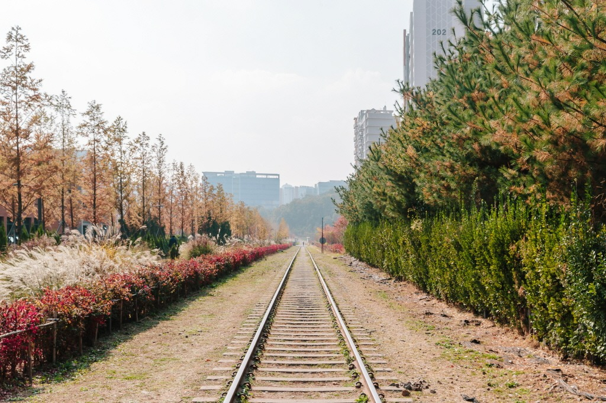
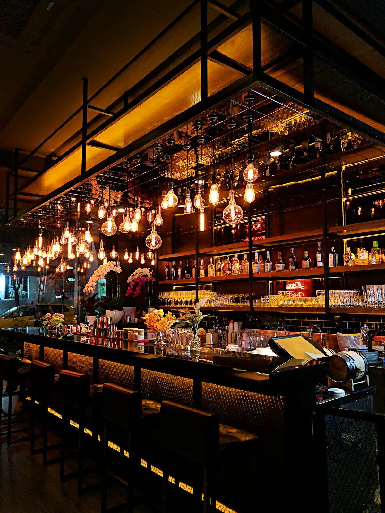

STEP 01
푸른수목원
⏱ 약 2시간 권장
서울시 최초로 조성된 6만 평 규모의 시립 수목원. 넓은 푸른 잔디광장, 고요한 수생식물원 수변 데크, 향긋한 장미원이 어우러져 도심 속 진정한 쉼표를 선물합니다.
💡 수목원 내 쓰레기통 없음 — 개인 쓰레기 봉투 지참 필수
Course Route
항동과 오류동을 유기적으로 잇는 다섯 곳, 총 5시간 코스
지도를 따라 반나절 코스를 미리 걷고 칼로리를 소모해 보세요!
Places
숲에서 시작해 마을 골목에 이르는 다섯 조각의 이야기
⏱ 약 2시간 권장
서울시 최초로 조성된 6만 평 규모의 시립 수목원. 넓은 푸른 잔디광장, 고요한 수생식물원 수변 데크, 향긋한 장미원이 어우러져 도심 속 진정한 쉼표를 선물합니다.
⏱ 자유롭게 탐방
수목원의 자락에 사뿐히 들어앉아 자연 조망을 담아낸 특별한 문화 공간. 큰 창 너머 초록 잎사귀들을 바라보며, 조용히 큐레이션된 책을 넘기는 고요의 미학을 체험해보세요.
⏱ 약 15분
이국적인 유리온실 속에서 따뜻하게 자라나는 다채로운 허브식물과 아열대 식물들을 관찰할 수 있는 아담한 온실 공간. 촉촉한 공기와 식물 냄새가 편안함을 선사합니다.

⏱ 약 25분
1959년 준공되어 화물 열차가 오가던 흔적이 고스란히 남아 있는 낭만적인 옛 단선 철도. 레일 양쪽으로 우거진 수풀 사잇길을 조용히 걸으며 정취 있는 인생 사진을 남겨보세요.

⏱ 약 2시간 이상 (식사 및 카페)
시간이 머문 듯한 정겨운 골목길 사이마다 젊은 기획자들의 손길이 닿은 힙한 로컬 맛집들과 아기자기한 동네 공방, 브런치 카페들이 숨바꼭질하듯 분산되어 매력을 뿜어내는 로컬 브랜드 성지입니다.
Food
오류버들마을이 자랑하는 대표 로컬 메뉴 여섯 가지 (다크 테마에서는 마우스를 올려 뒤집어보세요)
강원도식 전통 비법으로 빚어낸 쫄깃하고 투명한 감자 수제비. 걸쭉하고 고소한 메밀 들깨 국물이 걷느라 지친 속을 뜨끈하게 채워줍니다.
매일 육즙 가득하게 직접 구워내는 그릴 패티와 오가닉 번, 특제 소스가 조화를 이루어 인기를 끌고 있는 버들마을 골목의 대세 버거 브랜드.
오랜 세월을 버틴 동네 사랑방 노포 가마솥에서 튀겨내는 옛날식 시장 통닭. 겉은 바삭하고 속은 극도로 촉촉하여 맥주 한 잔 들이켜기 최적입니다.
사골 육수 베이스에 햄, 소시지를 듬뿍 넣고 얼큰 칼칼하게 끓여내 밥 한 공기 뚝딱 비우게 만드는 대중적인 맛이 보장된 단골 밥집 메뉴.
빈티지하고 서정적인 식물 가득 인테리어 공간에서, 갓 내린 싱글오리진 브루잉 커피와 상큼한 오픈 샌드위치를 즐길 수 있는 여유의 아이콘.
천연 발효종을 사용해 매일 아침 구워내는 유기농 식빵과 페이스트리. 달콤한 무화과 빵과 따뜻한 아메리카노의 조합으로 한적한 오후를 완성하세요.
※ 오류버들마을 맛집들은 골목 특성상 매장이 분산되어 있으니, 출발 전 카카오맵이나 네이버 지도 등으로 주소와 휴무일을 미리 확인하시는 것을 추천합니다.
Visit Info
힐링 코스를 가장 안전하고 여유롭게 즐기기 위한 핵심 안내
SNS Feed
푸른수목원과 오류버들마을의 생생한 일상과 계절 변화를 확인해보세요
※ 위 인스타그램 피드는 이미지 연출용으로 실제 공식 SNS 계정 정보를 담고 있습니다.